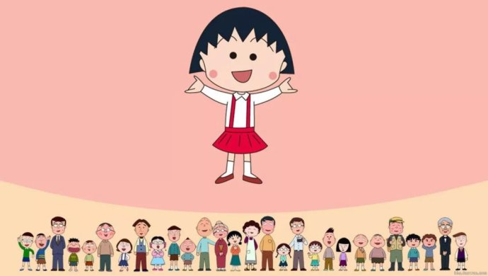
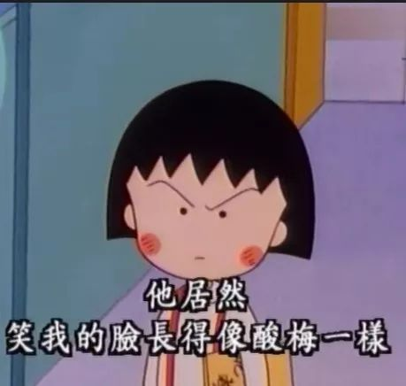
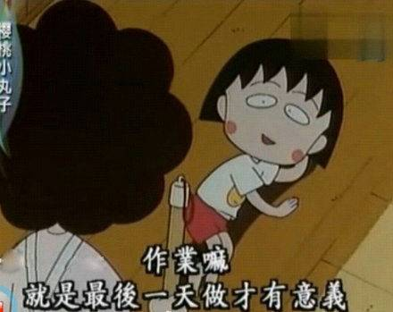
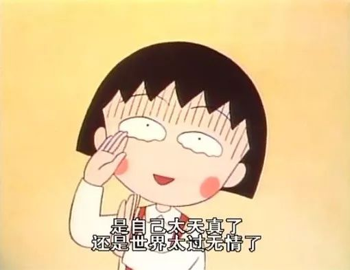
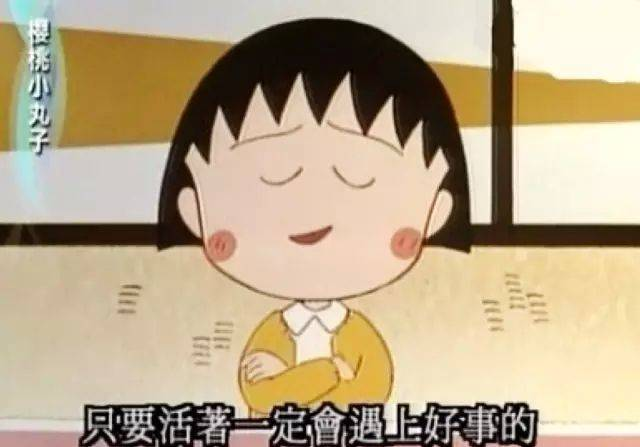
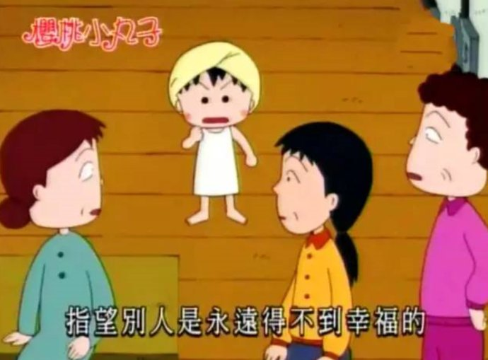

和许多国民漫画一样，《樱桃小丸子》最终也没有结局， 就像我们的人生海没结局一样。而现实即使再残酷，打开电视漫画，樱桃小丸子永远是那个 9 岁、迷迷糊糊的小女孩， 而小丸子一家，也将永远幸福下去。 “即使世界上的人都不偏袒小丸子， 但我最、最、最、最偏袒小丸子”。谢谢你啊小丸子，再见了。
你从什么时候觉得自己真正长大老去了？大概就是从那些童年记忆中的人，一个接着一个离开我们的时候吧。
这一次，是小丸子。
据日媒消息，日本经典漫画《樱桃小丸子》作者樱桃子（本名三浦美纪）已于本月15日因乳腺癌去世，享年53岁。
一个长相凶残的中年油腻大叔，坐在公交车上看到这个消息，眼泪就开始一滴滴掉下来，你难以想象，这个画面，有多滑稽，就多温暖。
因为所有的油腻大叔也都有过童年，而小丸子应该就是很多人的童年吧，那个永远睡不醒，永远一张一张数着零用钱的童年，如果没有小丸子，会乏味多少啊。
从各种意义上说，樱桃子就是小丸子本人，1984年，她开始使用笔名樱桃子，以自己的童年经历为蓝本，创作了漫画《樱桃小丸子》，并赋予主角相同的名字、 出生年月日、血型、星座等。漫画版早就在2011年12月31日完结，而动画版一直播放至今，截止2018年6月24日，共计1155集（不包括特别篇23篇）。
为什么人们喜欢小丸子？因为在这个太多负面新闻甚嚣尘上的世上，小丸子却永远在说一个童年的温暖故事。在小丸子的世界里，我们都不用长大。
但现实世界的樱桃子始终是要长大的，她结过两次婚，1989年， 她与《Ribon》编辑宫永正隆结婚，并在1994年生下长子。1998年两人离婚。2003年，樱桃子与插画家うんのさしみ再婚，并与次年剩下次子。
三浦美纪的个人网站公布了“樱桃子”去世的消息时，讣告引用了2014年“樱桃子”在入行30周年纪念活动上的一句话： “在这30年间，不论是美好的事或艰辛的事都有很多，但大家都让我作为作家过了非常幸福的时光。光是感谢仍不足以形容我的心情。”
我们也是啊，小丸子同学。
我们也是啊！
我知道很多人又想说什么：上帝缺少一个童年，于是带走了小丸子。
谁这么说我就打谁，我说真的。
而且上帝才不会为了童年带走小丸子，因为上帝应该也受不了这个整天唠唠叨叨说出那么多人生真相的小丸子吧。
看动画的时候我们哪里知道，这个看起来最不靠谱的小孩子，才是最深刻的人生哲学家。
日配声优Tarako说过，小丸子就是个平平常常的女孩子，故事里永远九岁，懒惰、邋遢、不卖萌，甚至还有点土气。
嗯，动漫世界里最没有女主光环的女主角，绝对就是她了。
当年刚引进中国的时候，很多家长都无法理解，这么一个长得老不正经，说起话来更不正经的小姑娘，怎么可以成为漫画女主呢？
漫画女主怎么也得长得跟美少女战士似的吧。还有很多家长担心，我们被小丸子带偏了。
可在孩子们的心里，小丸子说的都是真理。
我们跟她一样不想读书啊，而小丸子说——
作业永远最后一刻才做，小丸子给了我们理由——
都幻想过生活里有小叮当吧——还有你们热门日漫都是发糖的嘛！
但到了自己也长大，才明白小丸子说出的，不过是被大人们遮蔽的人生的真相。
小时候老师告诉我人间充满爱，长大后想起小丸子说的“是我太天真，还是世界太无情了”。
小时候老师说有志者事竟成，长大后想起小丸子原来早就说过——“有些事不是我不在意，而是在意又能怎样。”
小时候老师告诉我们活着就是要为社会做贡献，而小丸子说的是——“只要活着就一定会遇到好事的”。
长大后我们才发现，原来小丸子老师是如此有哲理的一个人啊，那些后来我们要用许多年才懂得的人生真相，这个小孩子早在童年的时候就告诉我们了对不对？
可是为什么还要经历漫长的人生呢？因为只有经历漫长的岁月后，我们才会懂得——
这不是漫画，这是实话。
小丸子从来不说高深的语句啊，她只是将那些人生真相就这么像个小孩子一样轻轻松松说出来，知道有一天你突然领悟到:喔，原来人生是这样的啊。
可是等你长大了，你也突然发现，原来那个伟大的哲学家，也会老，也会死。
这大概，是小丸子老师教给我们的人生最后一课吧。